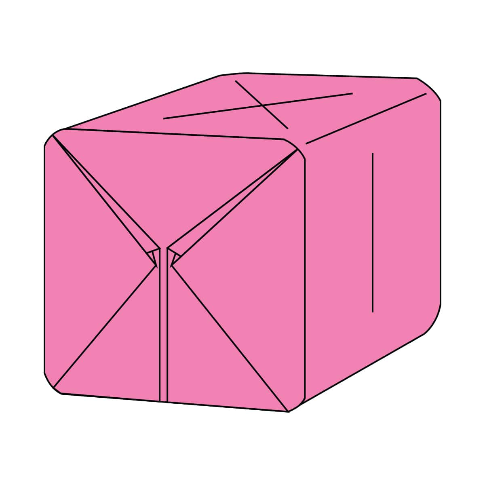
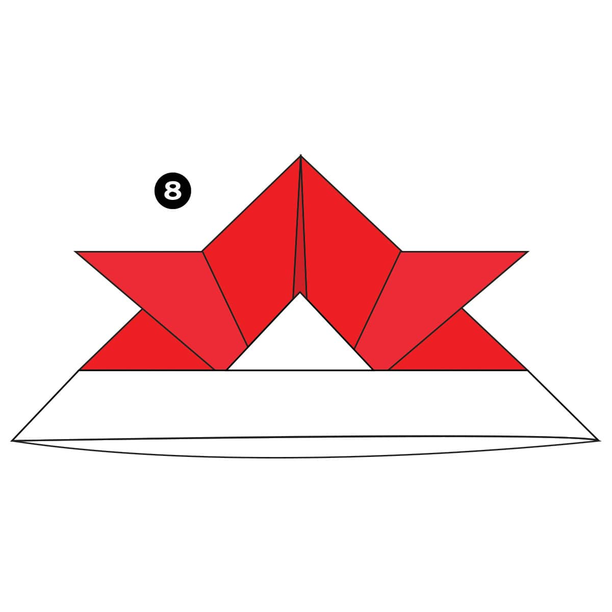

Camel
Video Tutorial Instrutions To Create Camel
Instrutions To Create Camel
Interesting Facts About Camel
- There are two types of camels: One humped or “dromedary” camels and two humped Bactrian camels.
- Camels have three sets of eyelids and two rows of eyelashes to keep sand out of their eyes.
- Camels have thick lips which let them forage for thorny plants other animals can't eat.
Chameleon
Video Tutorial Instrutions To Create Chameleon
Instrutions To Create Chameleon
Interesting Facts About Chameleon
- Chameleons are a unique group of lizards.
- Chameleons are introduced to Florida, California, and Hawaii, California, and later kept as household pets.
- There are more than 200 species of chameleons.
Pigeon
Video Tutorial Instrutions To Create Pigeon
Instrutions To Create Pigeon
Interesting Facts About Pigeon
- Pigeons are incredibly complex and intelligent animals.
- Pigeons are renowned for their outstanding navigational abilities.
- Pigeons mate for life, and tend to raise two chicks at the same time.
Teddy-Bear
Video Tutorial Instrutions To Create Teddy-Bear
Instrutions To Create Teddy-Bear
Interesting Facts About Teddy-Bear.
- Bears grieve deeply for others.
- Some species of Asiatic bear build nests in the trees.
- Bears care deeply about family members.
Panda
Video Tutorial Instrutions To Create Panda
Instrutions To Create Panda
Interesting Facts About Panda.
- They have great camouflage for their environment.
- They spend a lot of their day eating.
- But they do occasionally eat something other than bamboo.
Flying Cicada
Video Tutorial Instrutions To Create Cicada
Instrutions To Create Cicada
Interesting Facts About Cicada.
- Cicadas can survive a huge fall as babies, or nymphs.
- The loud whirring or buzzing sound you hear is an all-male cicada chorus.
- Cicadas have prominent eyes set wide apart, short antennae, and membranous front wings.
Frog
Video Tutorial Instrutions To Create Frog
Instrutions To Create Frog
Interesting Facts About Frog .
- A group of frogs is called an army.
- The world's largest frog species is known as the 'Goliath Frog' .
- Frogs drink water through their skin.
Gold Fish Balloon
Video Tutorial Instrutions To Create Gold Fish Balloon
Instrutions To Create Gold Fish Balloon
Interesting Facts About Gold Fish Balloon .
- It is commonly kept as a pet in indoor and is one of the most popular aquarium fish.
- Gold fish can survive without food for more than three weeks
- Goldfish can grow as big as a fully grown cat.
Parrot
Video Tutorial Instrutions To Create Parrot
Instrutions To Create Parrot
Interesting Facts About Parrot .
- There are around 372 different parrot species.
- Most parrots live in tropical areas.
- Parrots are often brightly coloured.
Water Bomb
Video Tutorial  Instrutions To Create Water BombInteresting Facts About Water Bomb.
- a bag filled with water and mischievously dropped from a height upon a passerby below.
- is an easy to make, working toy.
- If you want to prank someone with a water balloon use this.
Samurai-Helmet
Video Tutorial  Instrutions To Create Samurai-HelmetInteresting Facts About Samurai-Helmet .
- They were used to help high-ranking officials stand out in the fight.
- In the 16th century, Samurai begun to use the so-called kawari kabuto literally means unusual helmet
- While they looked unusual, the helmets were battle-ready.
Pin Wheel
Video Tutorial Instrutions To Create Pin Wheel
Instrutions To Create Pin Wheel
Interesting Facts About Pin Wheel .
- A pinwheel is a simple child's toy made of a wheel of paper or plastic curls attached at its axle to a stick by a pin.
- It is designed to spin when blown upon by a person or by the wind.
- It is a predecessor to more complex whirligigs.